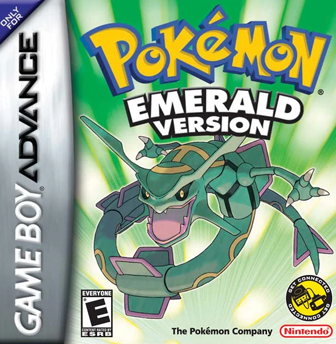
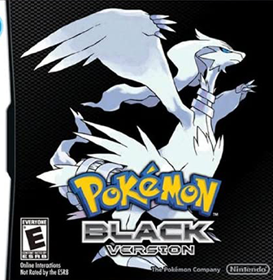

Jogos de Pokemon
Pokémon (ポケモン Pokemon?) é uma franquia de mídia que pertence a The Pokémon Company, tendo sido criada por Satoshi Tajiri em 1995. Ela é centrada em criaturas ficcionais
chamadas "Pokémon", que os seres humanos capturam e os treinam para lutarem entre si com seus ataques de diversos tipos.
A franquia começou com um par de jogos lançados para o Game Boy original, desenvolvidos pela Game Freak e publicados pela Nintendo. Atualmente, a franquia se estende em jogos, cartas colecionáveis, série de televisão, além de filmes, mangás e brinquedos. Pokémon é a segunda franquia de mídia de jogos mais bem sucedida e lucrativa do mundo, atrás da franquia de Mario que também pertence a Nintendo.
Em 2006, a franquia celebrou seu aniversário de 10 anos. As vendas dos jogos (incluindo home console games, como Hey You, Pikachu!, para Nintendo 64) acumularam mais de 200 milhões de cópias vendidas. Em novembro de 2005, a 4Kids Entertainment, que tinha conseguido o licenciamento da série animada, anunciou que havia concordado em não renovar o contrato da representação da franquia. A Pokémon USA Inc. (atualmente The Pokémon Company International), uma subsidiária da japonesa Pokémon Co., passou a supervisionar todas as licenças de Pokémon fora da Ásia. Até 2013, a franquia de Pokémon acumulou ¥4 trilhões ao redor do mundo (equivalente a US$ 40,98 bilhões).
Com mais de 20 anos em sua trajetória, a franquia de Pikachu e cia. já lançou dezenas de jogos, desenhos, filmes e os mais distintos produtos. Há uma base de fãs apaixonada por suas características e personagens, sempre discutindo sobre os favoritos de cada um.
Confira todos os jogos de Pokemon abaixo:
Confira todos os jogos de Pokemon abaixo:





Lista de melhores jogos segundo a crítica:
Pokémon Black e White / Black 2 e White 2
Os jogos da quinta geração de Pokémon continuam a mudança de tom no estilo da franquia iniciado em Diamond e Pearl. Apesar de manter o foco em uma organização tentando causar o caos e dominar o mundo, em Unova, o rival N mostra uma vertente parecida com o sentimento de “Pokémon são amigos” que os treinadores bonzinhos possuem.
A diferença é que N entende que nenhum humano além dele acredita nisso, por isso, quer libertar todos os Pokémon do mundo, forçando que outros treinadores se separem para sempre de seus fiéis companheiros.
Em Black e White 2, algo novo acontece na franquia de Pokémon. Enquanto os outros jogos contavam com uma terceira versão que aglutinava os dois jogos principais e apresentava algumas mudanças, BW2 continua a história anterior, sendo uma sequência direta dos acontecimentos que envolveram N, o Team Plasma, Reshiram e Zekrom. Dessa vez, o pai de N e líder do Neo Team Plasma é quem causa o caos na região de Unova, e cabe os novos treinadores acabarem de uma vez por todas com os planos de Ghetsis.
Com um rival com motivações que vão além de enfrentar o personagem principal para melhorarem suas habilidades de combate, Pokémon Black e White, bem como sua sequência, são quatro excelentes jogos que se complementam como um dos melhores jogos de Pokémon.
Pokémon Black e White e Pokémon Black e White 2 são exclusivos de Nintendo DS.
Pokémon Legends: Arceus
O formato dos jogos de Pokémon é considerado batido para muitos fãs e sempre existe um debate interminável na comunidade sobre como a marca pode se renovar e se adequar às novas gerações. Pokémon Legends: Arceus busca esse respiro para os fãs que já estavam sem paciência para a fórmula dos outros games da franquia.
Com um mundo “semi-aberto”, onde o jogador vai até grandes áreas exploráveis nos mapas, Pokémon de vários tipos são encontrados na selva, vivendo, se alimentando e preparados para atacar algum treinador desavisado que tentar provocá-los. Se passando nos primórdios da região de Sinnoh, aqui chamada Hisui, um jovem é transportado do futuro por Arceus para completar a “Pokédex” do passado.
Usando várias mecânicas novas, como os Mass Outbreaks e também os Alpha Pokémon, Pokémon Legends: Arceus pode pecar bastante no poderio gráfico, mas compensa mudando os rumos da franquia para finalmente evoluir de vez.
Pokémon Legends: Arceus é exclusivo de Nintendo Switch
Pokémon X e Pokémon Y